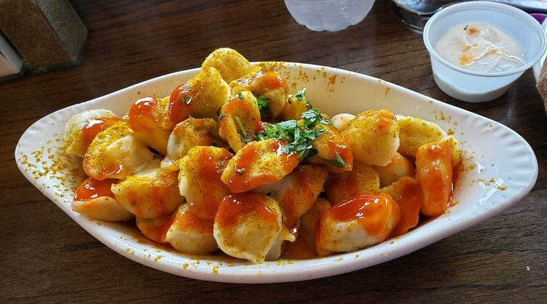
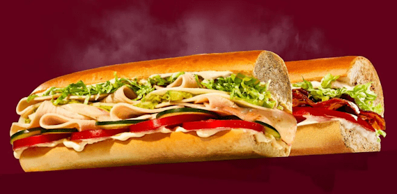
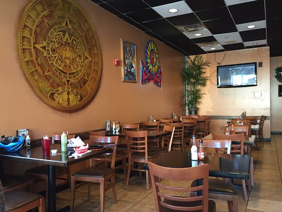

Paul's Pelmeni
Paul's Pelmeni is the most underrated restaurant in Madison. I give it a 9/10. Although it is a small restuarant connected to a bar, the service and food quality is superb.
Jimmy John's
Jimmy John's is the most consistent restaurant in Madison. I give it an 8/10. Jimmy John's is a chain of consistency. Their meat is always of high quality and their service is commendably fast.
Los Gemelos
Los Gemelos is the one trick pony of Madison. Although it has a vast menu, only one product is of high quality: the birria taco. The other items may be generous in portion but are low in quality. For this reason, I give it a 7/10.
Visit Yelp’s website for more restaurant reviews.